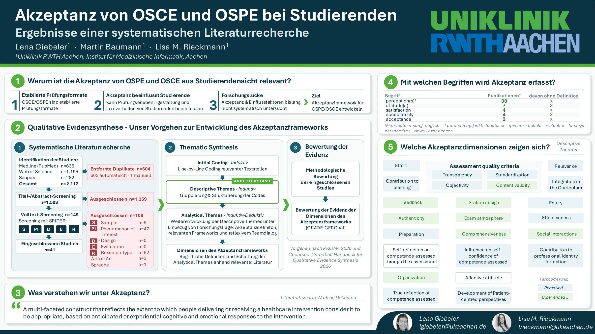

GMA · Poster
Akzeptanz von OSCE und OSPE bei Studierenden
Ergebnisse einer systematischen Literaturrecherche
Abstract
Mehr Hintergrund zur Arbeit
Akzeptanz von OSCE und OSPE bei Studierenden: Ergebnisse einer systematischen Literaturrecherche
Lena Giebeler · Martin Baumann · Lisa M. Rieckmann
GMA Abstract ein- oder ausklappen
Fragestellung
OSCE und OSPE sind etablierte kompetenzbasierte Prüfungsformate in der medizinischen Ausbildung. Während ihre Prüfungsqualität umfassend untersucht ist, wurde die Akzeptanz dieser Formate und deren akzeptanz beeinflussende Faktoren bislang nur unzureichend systematisch aufgearbeitet. Die Berücksichtigung studentischer Wahrnehmung kann eine kontinuierliche Optimierung der Prüfungsgestaltung und des Prüfungserlebens sowie einen positiven Einfluss auf das Lernverhalten der Studierenden haben. Ziel dieser Übersichtsarbeit war es, die Literatur zur Akzeptanz von OSCEs und OSPEs aus Studierendensicht systematisch zu erfassen und zu analysieren.
Methoden
Wir haben eine systematische Literaturrecherche und -auswertung gemäß PRISMA-2020-Richtlinien durchgeführt. Dabei wurde zur Strukturierung das SPIDER-Schema (Sample, Phenomenon of Interest, Design, Evaluation, Research Type) verwendet. Die Datenbanken Medline, Web of Science und Scopus wurden mit relevanten Suchbegriffen zu Akzeptanz, OSPE, OSCE und Studierenden sowie zu deren synonym verwendeten Begriffen durchsucht. Das Abstract- und Volltextscreening erfolgte verblindet durch zwei unabhängige Reviewer*innen anhand von definierten Ein- und Ausschlusskriterien. Diskrepanzen wurden im Konsensverfahren unter Einbeziehung eines dritten unabhängigen Reviewers geklärt. Zur Auswertung der eingeschlossenen Studien werden die Definitionen von Akzeptanz (konzeptionell und operativ) sowie Informationen zur Akzeptanz systematisch mittels thematic synthesis extrahiert, nach Ähnlichkeiten gruppiert und deskriptiv dargestellt.
Ergebnisse
Die systematische Literaturrecherche ergab insgesamt 2.112 Treffer. Nach dem Entfernen von 603 Duplikaten wurden 1.509 Abstracts gescreent. Das Abstractscreening zeigte eine Übereinstimmung von 90,7 % unserer Entscheidungen. Nach dem Konsensverfahren wurden 150 Publikationen für das Volltextscreening eingeschlossen. Vorläufige Ergebnisse zeigten, dass Begriffe wie acceptance, acceptability und satisfaction uneinheitlich und überwiegend ohne Definitionen dieser Konstrukte verwendet werden.
Diskussion
Die konzeptuelle Uneinheitlichkeit und das fehlende theoretical framework zur Akzeptanz unterstreichen die Notwendigkeit für eine klare Definition dieses Konstrukts im Prüfungskontext sowie für eine fundierte und präzise Beschreibung seiner Dimensionen. Die Arbeit schafft eine evidenzbasierte Grundlage für das Verständnis von Akzeptanz im Prüfungskontext und zeigt Handlungsfelder für eine studierendenzentrierte Weiterentwicklung kompetenzbasierter Prüfungen in der medizinischen Ausbildung.
Das Poster
Alle Inhalte auf einen Blick

Kontakt & Austausch
Wir freuen uns auf Ihre Perspektive.
Wenn Sie uns auf der GMA sehen, sprechen Sie uns gerne an. Wir freuen uns auf die Diskussion mit Ihnen!
Take-home Message
Was können Sie daraus mitnehmen?
Akzeptanz von OSPE/OSCE wird häufig erhoben, aber selten definiert und uneinheitlich berichtet. Unsere 21 Dimensionen zeigen: Akzeptanz ist vielfältig und sollte bei der Prüfungsplanung zur Maximierung der Bildungswirksamkeit berücksichtigt werden.